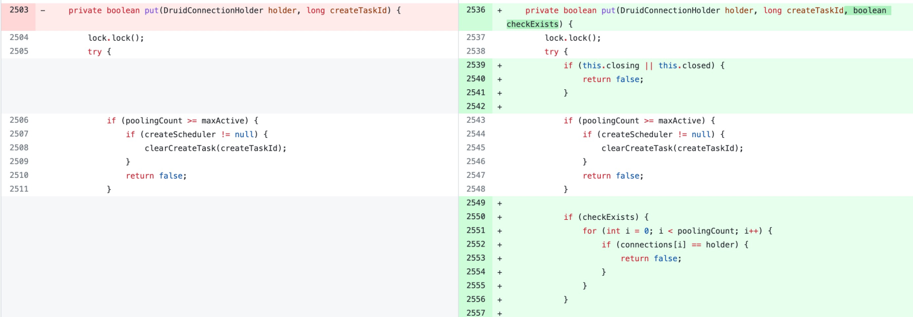

1. 背景 🔗
1.1 现象 🔗
2021.12.16 凌晨，我们的应用数据库因故发生了主备切换，之后某个 Pod 就持续报错 GetConnectionTimeoutException，并且该 Pod 的进程一直挂起，无法正常提供服务。
不过比较奇怪的是，当时连接同一数据库的其他 Pod 虽然也有几条报错（主要是数据库连接超时的报错），但很快其他 Pod 都恢复了正常，就只有这一个 Pod 一直没有恢复。
1.2 报错信息 🔗
异常 Pod 的部分报错信息如下：
[2021-12-16 02:10:06.617] [ERROR] [thread-30849] com.alibaba.druid.pool.DruidPooledStatement errorCheck:367 - CommunicationsException, druid version 1.2.5, jdbcUrl : jdbc:mysql://xxx:3306/xxx?useUnicode=true&characterEncoding=UTF-8&allowMultiQueries=true, testWhileIdle true, idle millis 1785, minIdle 5, poolingCount 0, timeBetweenEvictionRunsMillis 300000, lastValidIdleMillis 1785, driver com.mysql.cj.jdbc.Driver, exceptionSorter com.alibaba.druid.pool.vendor.MySqlExceptionSorter
......
2021-12-16 02:10:06.617] [ERROR] thread-30849] Caused by: com.alibaba.druid.pool.GetConnectionTimeoutException: wait millis 100000, active 399, maxActive 100, creating 0
at com.alibaba.druid.pool.DruidDataSource.getConnectionInternal(DruidDataSource.java:1745)
at com.alibaba.druid.pool.DruidDataSource.getConnectionDirect(DruidDataSource.java:1415)
at com.alibaba.druid.pool.DruidDataSource.getConnection(DruidDataSource.java:1395)
at com.alibaba.druid.pool.DruidDataSource.getConnection(DruidDataSource.java:1385)
at com.alibaba.druid.pool.DruidDataSource.getConnection(DruidDataSource.java:100)
at org.springframework.jdbc.datasource.DataSourceUtils.fetchConnection(DataSourceUtils.java:158)
at org.springframework.jdbc.datasource.DataSourceUtils.doGetConnection(DataSourceUtils.java:116)
at org.springframework.orm.ibatis.SqlMapClientTemplate.execute(SqlMapClientTemplate.java:182)
... 26 common frames omitted
从报错信息来看， GetConnectionTimeoutException 即获取连接超时。但数据库和网络都是正常的，为什么获取数据库连接超时呢？
此外错误栈中的 active 居然比 maxActive 大，最大连接数 maxActive 是 100，为什么活跃连接数能达到 399？
在 Druid 的 issues 中， GetConnectionTimeoutException 也是一个非常常见的问题，那这个异常到底是怎么产生的呢，又该如何避免呢？
接下来就让我们带着这些疑问，通过阅读 Druid 源码进行深入的分析。
2.1.3 Druid 配置 🔗
在进行问题分析前，先看一下当前的 Druid 配置。Druid 的版本为 1.2.5，因此在接下来的内容中，我都将根据 1.2.5 版本的源码进行分析。Druid 的具体配置如下：
<bean id="dataSource" class="com.alibaba.druid.pool.DruidDataSource" init-method="init" destroy-method="close">
<property name="url" value="${jdbc_url}" />
<property name="username" value="${jdbc_user}" />
<property name="password" value="${jdbc_password}" />
<property name="maxActive" value="100"/>
<property name="initialSize" value="1"/>
<property name="maxWait" value="100000"/>
<property name="minIdle" value="1"/>
<property name="timeBetweenEvictionRunsMillis" value="300000"/>
<property name="validationQuery" value="SELECT 1"/>
<property name="testWhileIdle" value="true"/>
<property name="removeAbandoned" value="false"/>
<property name="removeAbandonedTimeout" value="600"/>
</bean>
2. 关键变量 🔗
在错误栈中，我们看到了 pollingCount 、active 、maxActive 等变量，那这些变量到底是什么含义呢？
这一章节就先来了解一下。同时了解了这些变量的含义，也更利于后续阅读源码分析问题。
2.1 配置项 🔗
这里列出一些本文会涉的及关键配置，更多配置可参考 DruidDataSource配置属性列表 。
2.1.1 minIdle 🔗
连接池中至少需要保持的连接数。
2.1.2 maxActive 🔗
连接池中最大连接数。
2.1.3 maxWait 🔗
单次获取连接的最长等待时间。
2.2 DruidDataSource 🔗
DruidDataSource 是数据源，每个数据源都有一个对应的 DruidDataSource 实例。
2.2.1 activeCount 🔗
当前活跃连接数。每当成功获取到一个连接后，activeCount 都会加一，同时也会将 holder 的 active 属性设置为 true。
private DruidPooledConnection getConnectionInternal(long maxWait) {
// ...
if (holder != null) {
if (holder.discard) {
continue;
}
activeCount++;
holder.active = true;
}
}
2.2.2 connections 🔗
�
当前所数据源拥有的连接池。其类型是 DruidConnectionHolder[] 。
2.2.3 poolingCount 🔗
� 连接池中的的连接数。
每当放入连接到连接池中，就会将 poolingCount 加一，例如：
private boolean put(DruidConnectionHolder holder, long createTaskId) {
// ...
connections[poolingCount] = holder;
incrementPoolingCount();
// ...
}
private final void incrementPoolingCount() {
poolingCount++;
}
每当将连接从连接池中取出，就会将 poolingCount 减一，例如：
private DruidConnectionHolder pollLast(long nanos) throws InterruptedException, SQLException {
// ...
decrementPoolingCount();
DruidConnectionHolder last = connections[poolingCount];
connections[poolingCount] = null;
// ...
return last;
}
private final void decrementPoolingCount() {
poolingCount--;
}
2.3 DruidConnectionHolder 🔗
数据库连接以及相关属性。
2.3.1 conn 🔗
数据库连接，类型为 Connection。
2.3.2 active 🔗
用来标记连接是否活跃。
2.3.3 lastActiveTimeMillis 🔗
� 连接上次活跃时间。
2.3.4 lastKeepTimeMillis 🔗
连接上次保持活跃的时间。每次通过 keepAlive 保持连接活跃，就会更新此时间。
2. 源码分析 🔗
接下来，就让我们从错误栈开始深入源码，一层一层寻找问题的根源。
2.2.1 异常是如何抛出的？ 🔗
首先 GetConnectionTimeoutException 是由 getConnectionInternal 方法抛出的，该方法的主要作用就是获取数据库连接，当前没有获取到连接也就是 holder 为 null 的时候，就会抛出异常，同时打印出当前 active 和 maxActive 的值。
if (holder == null) {
// ...
StringBuilder buf = new StringBuilder(128);
buf.append("wait millis ")//
.append(waitNanos / (1000 * 1000))//
.append(", active ").append(activeCount)//
.append(", maxActive ").append(maxActive)//
.append(", creating ").append(creatingCount)//
;
// ...
String errorMessage = buf.toString();
if (this.createError != null) {
throw new GetConnectionTimeoutException(errorMessage, createError);
} else {
throw new GetConnectionTimeoutException(errorMessage);
}
}
holder 是 DruidConnectionHolder 的实例。那为什么 holder 为 null 呢？接下来就让我们再看一下 holder 是如何创建的。
2.2 连接是如何创建的？ 🔗
接下来就看 holder 是如何创建的。
在 getConnectionInternal 中， holder 的创建是在 for 循环中进行的，一旦创建成功则退出循环。
在创建 holder 时，有同步和异步两种方式。
2.2.1 同步创建连接 🔗
if (createScheduler != null
&& poolingCount == 0
&& activeCount < maxActive
&& creatingCountUpdater.get(this) == 0
&& createScheduler instanceof ScheduledThreadPoolExecutor) {
ScheduledThreadPoolExecutor executor = (ScheduledThreadPoolExecutor) createScheduler;
if (executor.getQueue().size() > 0) {
createDirect = true;
continue;
}
}
如果需要同步创建连接，需要同时满足以下几个条件：
- 不配置创建连接的线程池，即
createScheduler != null - 目前连接池中没有可用连接，即
poolingCount == 0 - 目前活跃的连接数小于最大连接数，即
activeCount < maxActive - 目前没有正在同步创建的连接，也就是统一时刻只能存在一个线程在同步创建连接，即
creatingCountUpdater.get(this) == 0
满足上述条件后，createDirect 会被设置为 true，然后在下一次循环中就会同步创建连接。也正因为有上述条件在，所以只有很少的线程会进入到同步创建连接的流程中。
private DruidPooledConnection getConnectionInternal(long maxWait) {
// ...
if (createDirect) {
if (creatingCountUpdater.compareAndSet(this, 0, 1)) {
PhysicalConnectionInfo pyConnInfo = DruidDataSource.this.createPhysicalConnection();
holder = new DruidConnectionHolder(this, pyConnInfo);
holder.lastActiveTimeMillis = System.currentTimeMillis();
// ...
boolean discard = false;
lock.lock();
try {
if (activeCount < maxActive) {
activeCount++;
holder.active = true;
if (activeCount > activePeak) {
activePeak = activeCount;
activePeakTime = System.currentTimeMillis();
}
break;
} else {
discard = true;
}
} finally {
lock.unlock();
}
}
}
}
2.2.2 异步创建连接 🔗
如果没有同步创建连接，则接下来会通过 pollLast(nanos) 或 takeLast() 异步创建连接。
nanos 是根据 maxWait 计算出来的，如果设置了 maxWait 就会调用 pollLast(nanos)，否则调用 takeLast() 。
private DruidPooledConnection getConnectionInternal(long maxWait) {
final long nanos = TimeUnit.MILLISECONDS.toNanos(maxWait);
// ...
if (maxWait > 0) {
holder = pollLast(nanos);
} else {
holder = takeLast();
}
}
2.2.3 pollLast 和 takeLast 🔗
在 pollLast 方法中，如果当前连接池中的连接数 poolingCount 为 0，则调用 emptySignal 使用信号量 empty，并创建异步线程去创建连接。
private DruidConnectionHolder pollLast(long nanos) throws InterruptedException, SQLException {
long estimate = nanos;
for (;;) {
if (poolingCount == 0) {
emptySignal(); // send signal to CreateThread create connection
// ...
}
}
}
然后，pollLast 自己再使用 notEmpty 信号量进入等待：
estimate = notEmpty.awaitNanos(estimate); // signal by
// recycle or
// creator
本次等待的最长时间 estimate 就是根据 maxWait 计算出来的。
在有连接被回收，会新创建出来后，就会被唤醒。如果唤醒后本线程没有成功创建连接，并且目前总的等待时间还没到maxWait，就会再次进入 await。
如果等待时间到了 maxWait ，但依旧没有成功创建连接，即 poolingCount 为 0，则会返回 null。
if (poolingCount == 0) {
if (estimate > 0) {
continue;
}
return null;
}
通过信号创建的连接会被放入到连接池 connections 中，然后 pollLast(nanos) 收到创建成功的信号后，就可以从连接池中取出连接并返回了：
private DruidConnectionHolder pollLast(long nanos) throws InterruptedException, SQLException {
// ...
decrementPoolingCount();
DruidConnectionHolder last = connections[poolingCount];
connections[poolingCount] = null;
// ...
return last;
}
无参的 takeLast() 就简单很多了，它的流程和 pollLast(nanos) 几乎一致，唯一不同的是它没有等待超时时间，只有等待回收线程，会创建线程唤醒后，才会继续执行。
DruidConnectionHolder takeLast() throws InterruptedException, SQLException {
try {
while (poolingCount == 0) {
emptySignal(); // send signal to CreateThread create connection
try {
notEmpty.await(); // signal by recycle or creator
}
}
}
decrementPoolingCount();
DruidConnectionHolder last = connections[poolingCount];
connections[poolingCount] = null;
return last;
}
2.2.4 emptySignal 🔗
使用信号异步创建连接的 emptySignal() 方法代码如下：
private void emptySignal() {
if (createScheduler == null) {
empty.signal();
return;
}
if (createTaskCount >= maxCreateTaskCount) {
return;
}
if (activeCount + poolingCount + createTaskCount >= maxActive) {
return;
}
submitCreateTask(false);
}
如果设置的创建线程池 createScheduler 为 null，则会发送一个信号去创建连接。否则创建一个 CreateConnectionTask 来创建连接。
这里发出的创建信号会被 CreateConnectionThread 接收，CreateConnectionThread 会在数据源初始化的时候创建。
public void init() throws SQLException {
// ...
createAndStartCreatorThread();
createAndStartDestroyThread();
}
收到信号后，会判断当前活跃连接数以及连接池中的连接数是否大于 maxActive，如果大于则不创建，避免创建出超过 maxActive 数量的连接；如果小于，则创建了物理连接，然后在调用 DruidDataSource 的 put 方法将连接放入连接池中。
public void run() {
for (;;) {
// ...
try {
boolean emptyWait = true;
if (createError != null
&& poolingCount == 0
&& !discardChanged) {
emptyWait = false;
}
if (emptyWait
&& asyncInit && createCount < initialSize) {
emptyWait = false;
}
if (emptyWait) {
// 必须存在线程等待，才创建连接
if (poolingCount >= notEmptyWaitThreadCount //
&& (!(keepAlive && activeCount + poolingCount < minIdle))
&& !isFailContinuous()
) {
empty.await();
}
// 防止创建超过maxActive数量的连接
if (activeCount + poolingCount >= maxActive) {
empty.await();
continue;
}
}
}
// ...
PhysicalConnectionInfo connection = null;
try {
connection = createPhysicalConnection();
}
// ...
boolean result = put(connection);
}
}
CreateConnectionTask 也是类似的逻辑。
�
2.2.5 DruidDataSource#put 🔗
在 put 方法中，首先会判断当前连接数是否大于最大连接数，如果小于，则会将连接放入到 connections 中，然后将 poolingCount 的值加一。
private boolean put(DruidConnectionHolder holder, long createTaskId) {
if (poolingCount >= maxActive) {
if (createScheduler != null) {
clearCreateTask(createTaskId);
}
return false;
}
// ...
connections[poolingCount] = holder;
incrementPoolingCount();
//...
}
2.2.6 小结 🔗
以上便是便是大致的连接创建流程。
总的来说就是，应用需要执行 SQL 的时候，就通过 getConnectionInternal 获取连接，其中创建连接分为同步和异步，异步则通过信号量创建连接。成功获取连接后还会将 activeCount 加一。
结合 1.2.1 中的异常信息，报错时 poolingCount 为 0， 所以会调用 emptySignal() 创建连接。但activeCount + poolingCount + createTaskCount 显然是大于 maxActive 的，因此 pollLast 最终会等待 maxWait 然后超时。所以最终 getConnectionInternal 抛出了 GetConnectionTimeoutException 异常。
所以接下来问题的关键就是，为什么 activeCount 会大于 maxActive？
2.3 连接是如何释放的？ 🔗
要解答这个问题，我们就需要先知道 activeCount 什么时候减少。
前面已经知道了 activeCount 会在获取到连接后增加，那相应的，activeCount 也会在释放连接时减少。所以接下来就详细了解连接时如何释放的。
2.3.1 应用主动关闭连接 🔗
提到连接释放，首先想到的应该是我们在应用中主动调用 connection.close()方法来释放连接。
那 connection.close() 会立即释放物理连接吗？显然是不会的。
public void close() throws SQLException {
// ...
recycle();
}
public void recycle() throws SQLException {
// ...
if (!this.abandoned) {
DruidAbstractDataSource dataSource = holder.getDataSource();
dataSource.recycle(this);
}
}
connection.close() 会最终会调用 dataSource.recycle(DruidPooledConnection pooledConnection)释放连接。 那 dataSource.recycle 又是怎么实现的呢？
2.3.2 recycle 🔗
在 recyle 中会有一些列的连接状态判断，如物理连接是否已关闭等，然后决定是否立即释放连接。不过大部分情况下会运行到下面的逻辑，即如果连接状态是活跃的，则将 activeCount 减一，并将状态再设置为 false。最后再调用 putLast。
/**
* 回收连接
*/
protected void recycle(DruidPooledConnection pooledConnection) throws SQLException {
// ...
if (holder.active) {
activeCount--;
holder.active = false;
}
result = putLast(holder, currentTimeMillis);
// ...
}
在 putLast 中则会更新连接的上次活跃时间，然后将连接再度放回到连接池中，并将 poolingcount 加一。
boolean putLast(DruidConnectionHolder e, long lastActiveTimeMillis) {
if (poolingCount >= maxActive || e.discard) {
return false;
}
e.lastActiveTimeMillis = lastActiveTimeMillis;
connections[poolingCount] = e;
incrementPoolingCount();
// ...
return true;
}
也就是说，通过 .close 方法主动释放连接，不会真的释放，而是将连接还回到连接池中。
2.3.3 连接释放 🔗
既然前面的 recycle 不会关闭连接，但连接池也不可能无限大，那连接到底是如何回收的呢？这就要提到 Druid 的连接释放任务了。
通 CreateConnectionThread 一样， Druid 在初始化数据源时会创建释放连接的线程 DestroyThread ，然后创建释放任务 DestroyTask。
当应用设置的释放线程池 destroyScheduler 不为空时，就会在 destroyScheduler 中运行 DestroyTask；否则会创建一个消费连接的线程池，然后在该线程池中运行释放连接的任务。与 createScheduler 类似，大部分情况下我们不会设置 destroyScheduler。
protected void createAndStartDestroyThread() {
destroyTask = new DestroyTask();
if (destroyScheduler != null) {
// ...
destroySchedulerFuture = destroyScheduler.scheduleAtFixedRate(destroyTask, period, period,
TimeUnit.MILLISECONDS);
return;
}
// ...
destroyConnectionThread = new DestroyConnectionThread(threadName);
destroyConnectionThread.start();
}
DestroyConnectionThread 本质上就是一个死循环，在循环中每隔 timeBetweenEvictionRunsMillis 执行一次释放连接的任务。
public class DestroyConnectionThread extends Thread {
// ...
public void run() {
for (;;) {
// 从前面开始删除
try {
// ...
if (timeBetweenEvictionRunsMillis > 0) {
Thread.sleep(timeBetweenEvictionRunsMillis);
} else {
Thread.sleep(1000); //
}
destroyTask.run();
} catch (InterruptedException e) {
break;
}
}
}
}
释放连接的关键逻辑就在 DestroyTask 中。
2.3.4 DestroyTask 🔗
在 DestroyTask 中，主要是通过 shrink 方法来释放连接。
public class DestroyTask implements Runnable {
public DestroyTask() {
}
@Override
public void run() {
shrink(true, keepAlive);
if (isRemoveAbandoned()) {
removeAbandoned();
}
}
}
所以接下来的关键就是 shrink(boolean checkTime, boolean keepAlive)� 方法。
2.3.5 DestroyTask#shrink 🔗
shrink 接收两个参数：
checkTime是否校验连接的时间，如连接空闲时间等；keepAlive是否开启了 keepAlive
�
在 shrink 中，首先会通过 for 循环，依次遍历连接池中的所有连接并进行处理。
在循环中，首先会判断当前是否有 fatalError，如果有，则会将连接放入 keepAliveConnections 列表中，keepAliveConnections 存储了需要保持活跃的连接。什么时候会出现 fatalError 呢？主要是执行 SQL 时可能出现，比如数据库断网、数据库重启等。
for (int i = 0; i < poolingCount; ++i) {
DruidConnectionHolder connection = connections[i];
if ((onFatalError || fatalErrorIncrement > 0) && (lastFatalErrorTimeMillis > connection.connectTimeMillis)) {
keepAliveConnections[keepAliveCount++] = connection;
continue;
}
}
如果没有 fatalError 并且开启了 checkTime 为 true，则会继续根据连接时间判断连接应该被放入 keepAliveConnections 还是 evictConnections 队列。
具体逻辑如下：
- 首先判断物理连接是否超时，如果超时则放入 evictConnections，默认 phyTimeoutMillis 为
-1； - 然后判断连接空闲时间是否同时小于 minEvictableIdleTimeMillis 和 keepAliveBetweenTimeMillis，如果不满足条件，则退出本次释放任务，也就是连接池中的其他连接都不会被释放了；
- 如果连接空闲时间大于 minEvictableIdleTimeMillis，则判断该连接释放应该被释放，判断条件是
i < checkCount，也就是如果当前连接池数量小于 minIdle，则连接池前面的连接不会被释放，而是从连接池后面的连接开始释放； - 如果不满足条件 3，并且开启了 keepAlive，连接空闲时间也大于 keepAliveBetweenTimeMillis，则将连接放入 keepAliveConnections 队列。结合条件 3，也就是说，连接池前面的连接会被保持活跃。
final int checkCount = poolingCount - minIdle;
// ...
for (int i = 0; i < poolingCount; ++i) {
// ...
if (phyTimeoutMillis > 0) {
long phyConnectTimeMillis = currentTimeMillis - connection.connectTimeMillis;
if (phyConnectTimeMillis > phyTimeoutMillis) {
evictConnections[evictCount++] = connection;
continue;
}
}
long idleMillis = currentTimeMillis - connection.lastActiveTimeMillis;
if (idleMillis < minEvictableIdleTimeMillis
&& idleMillis < keepAliveBetweenTimeMillis
) {
break;
}
if (idleMillis >= minEvictableIdleTimeMillis) {
if (checkTime && i < checkCount) {
evictConnections[evictCount++] = connection;
continue;
} else if (idleMillis > maxEvictableIdleTimeMillis) {
evictConnections[evictCount++] = connection;
continue;
}
}
if (keepAlive && idleMillis >= keepAliveBetweenTimeMillis) {
keepAliveConnections[keepAliveCount++] = connection;
}
}
正常情况下，connections 中的连接都是按 lastActiveTimeMillis 先后顺序排列的，因此释放连接时，从前往后释放，一旦发现连接空闲时间小于 minEvictableIdleTimeMillis 和 keepAliveBetweenTimeMillis 就结束本次释放流程，这样就可以减少循环次数，提高性能。并且连接保活时，也是从前往后进行保活，因为前面的连接更可能超时。这也正是 Druid 设计的巧妙之处。
当然，这里是“正常情况”，那必然也会有异常情况，异常情况是什么样呢？这里暂时先不展开，后面会详细讲解。
在确定了需要释放和保持活跃的连接数量之后，下一步就是从连接池中将连接删除，删除的方式就是将 connections 中前 removeCount 个连接删掉，然后将剩余连接再依次从前往后放入到 connections，最后再用 null 填充 connections，以便后续存储保活的连接。
int removeCount = evictCount + keepAliveCount;
if (removeCount > 0) {
System.arraycopy(connections, removeCount, connections, 0, poolingCount - removeCount);
Arrays.fill(connections, poolingCount - removeCount, poolingCount, null);
poolingCount -= removeCount;
}
接下来对于 evictConnections 中的连接，就可以直接关闭了。
DruidConnectionHolder item = evictConnections[i];
Connection connection = item.getConnection();
JdbcUtils.close(connection);
destroyCountUpdater.incrementAndGet(this);
对于 keepAliveConnections 中的连接，则先判断连接是否可用，如果连接可用，则调用 put 方法将连接再放回连接池。和前面应用主动释放连接时调用的 putLast 不同的是，put 不会更新连接的 lastActiveTimeMillis 。
如果连接不可用，则�再调用 emptySignal() 通过信号创建一个新的连接。
DruidConnectionHolder holer = keepAliveConnections[i];
Connection connection = holer.getConnection();
holer.incrementKeepAliveCheckCount();
boolean validate = false;
try {
this.validateConnection(connection);
validate = true;
} catch (Throwable error) {
// skip
}
boolean discard = !validate;
if (validate) {
holer.lastKeepTimeMillis = System.currentTimeMillis();
boolean putOk = put(holer, 0L);
if (!putOk) {
discard = true;
}
}
if (discard) {
try {
connection.close();
}
// ...
try {
if (activeCount + poolingCount <= minIdle) {
emptySignal();
}
}
// ...
}
进行连接保活时，优先将时间更早的连接进行保活。但有时候我们可能期望一个连接不要太长时间空闲，比如连接空闲 1 分钟后，即使连接可用也要释放，这时应该怎么办呢？
Druid 也考虑到了这个问题，可通过设置 testWhileIdle 为 true 进行空闲连接释放。
2.3.6 空闲连接释放 🔗
在应用中我们会通过 getConnection 获取连接，getConnection 会调用 getConnectionDirect，getConnectionDirect 继续调用 getConnectionInternal。
public DruidPooledConnection getConnectionDirect(long maxWaitMillis) throws SQLException {
// ...
for (;;) {
// handle notFullTimeoutRetry
DruidPooledConnection poolableConnection;
try {
poolableConnection = getConnectionInternal(maxWaitMillis);
}
if (testOnBorrow) {
// ...
} else {
// ...
if (testWhileIdle) {
final DruidConnectionHolder holder = poolableConnection.holder;
long currentTimeMillis = System.currentTimeMillis();
long lastActiveTimeMillis = holder.lastActiveTimeMillis;
long lastExecTimeMillis = holder.lastExecTimeMillis;
long lastKeepTimeMillis = holder.lastKeepTimeMillis;
if (checkExecuteTime
&& lastExecTimeMillis != lastActiveTimeMillis) {
lastActiveTimeMillis = lastExecTimeMillis;
}
if (lastKeepTimeMillis > lastActiveTimeMillis) {
lastActiveTimeMillis = lastKeepTimeMillis;
}
long idleMillis = currentTimeMillis - lastActiveTimeMillis;
long timeBetweenEvictionRunsMillis = this.timeBetweenEvictionRunsMillis;
if (timeBetweenEvictionRunsMillis <= 0) {
timeBetweenEvictionRunsMillis = DEFAULT_TIME_BETWEEN_EVICTION_RUNS_MILLIS;
}
if (idleMillis >= timeBetweenEvictionRunsMillis
|| idleMillis < 0 // unexcepted branch
) {
boolean validate = testConnectionInternal(poolableConnection.holder, poolableConnection.conn);
if (!validate) {
discardConnection(poolableConnection.holder);
continue;
}
}
}
}
return poolableConnection;
}
}
在 getConnectionDirect 中，获取到连接后，如果开启了 testWhileIdle ，则会继续判断连接是否空闲，如果是，则会调用 discardConnection� 释放连接，然后再进行下一次循环创建新的连接。连接是否空闲，主要根据 lastActiveTimeMillis 和 timeBetweenEvictionRunsMillis 进行判断。
在 discardConnection 中，如果连接 active 状态为 true，则会将 activeCount 减一，并将 active 设置为 false。
public void discardConnection(DruidConnectionHolder holder) {
// ...
Connection conn = holder.getConnection();
if (conn != null) {
JdbcUtils.close(conn);
}
lock.lock();
try {
if (holder.discard) {
return;
}
if (holder.active) {
activeCount--;
holder.active = false;
}
discardCount++;
holder.discard = true;
if (activeCount <= minIdle) {
emptySignal();
}
} finally {
lock.unlock();
}
}
2.3.7 小结 🔗
以上便是便是连接释放的流程。
当应用主动调用 .close 时，并不会真的是否连接，而是更新连接的 lastActiveTimeMillis，然后将连接返回到连接池，然后将 activeCount 减一。
然后 DestroyTask 再定期清理连接，判断连接应该被释放还是被保活。如果连接应该被保活，则再将连接放回到连接池。
此外应用获取连接时，也会判断连接的空闲时间，如果连接是空闲的，也会释放连接，并将 activeCount 减一。
那为什么 activeCount 会大于 maxActive 呢？可能唯一的解释就是 activeCount 不准确。
这里先说结论，的确如此。这是 Druid 1.2.8 之前版本的一个 BUG。
通过前面的分析，我们可以大概推测：当连接池中存在两个相同连接时，activeCount 就会少减一。因为当应用第一次释放连接时，会将连接的 active 设置为 false 并执行 activeCount--，第二次释放时，由于 active 已经为 false 了，因此就不会再执行 activeCount-- 了。
那么如何证明推测的正确性呢？
3. 问题复现 🔗
为了证明前面的推测，我写了一段代码来验证。
3.1 复现代码 🔗
代码如下，Druid 版本为 1.2.5 ：
public class Test {
public static void main(String[] args) throws Exception {
String jdbcUrl = "jdbc:mysql://localhost:3306/test?useUnicode=true&characterEncoding=UTF-8&allowMultiQueries=true";
String user = "root";
String password = "11111111";
DruidDataSource druidDataSource = new DruidDataSource();
druidDataSource.setUsername(user);
druidDataSource.setPassword(password);
druidDataSource.setUrl(jdbcUrl);
druidDataSource.setValidationQuery("select 1");
druidDataSource.setMinEvictableIdleTimeMillis(10 * 1000);
druidDataSource.setMaxEvictableIdleTimeMillis(DEFAULT_MAX_EVICTABLE_IDLE_TIME_MILLIS);
druidDataSource.setKeepAliveBetweenTimeMillis(12 * 1000);
druidDataSource.setMinIdle(2);
druidDataSource.setMaxWait(1000);
druidDataSource.setMaxActive(4);
druidDataSource.setTimeBetweenEvictionRunsMillis(7 * 1000);
druidDataSource.setKeepAlive(true);
DruidPooledConnection connection1 = druidDataSource.getConnection();
DruidPooledConnection connection2 = druidDataSource.getConnection();
connection2.close();
Thread.sleep(9 * 1000);
connection1.close();
Thread.sleep(14 * 1000);
DruidPooledConnection connection3 = druidDataSource.getConnection();
DruidPooledConnection connection4 = druidDataSource.getConnection();
System.out.println(connection3.getConnectionHolder() == connection4.getConnectionHolder());
connection3.close();
connection4.close();
}
}
最终会输出 true，也就是 connection3 和 connection4 获取到的连接是一样的。
为什么为 true 呢？接下来就结合前面的源码理解，梳理一下整个时间线。
3.2 时间线 🔗
🔗
3.2.1 时间点 00：初始化并关闭 connection2 🔗
获取 connection1 和 connection2，其 holder 如下：
- connection1
{id: 110, useCount: 1, lastActiveTime: 00, active: true} - connection2
{id: 100, useCount: 1, lastActiveTime: 00, active: true}
然后关闭 connection2，此时 connections 为 [connection2]：
- connection2
{id: 100, useCount: 1, lastActiveTime: 00, active: false}
最终 activeAcount 为 1。
3.2.2 时间点 07：第一次回收 🔗
DestroyTask 第一次执行，此时 connection2 的空闲时间均小于 minEvictableIdleTimeMillis 和keepAliveBetweenTimeMillis，跳过回收。
3.2.3 时间点 09：关闭 connection1 🔗
关闭 connection1，connection1 返回连接池，此时 connections 为 [connection2,connection1]，connections 中的连接空闲时间是递减的：
- connection2
{id: 100, useCount: 1, lastActiveTime: 00, active: false} - connection1
{id: 110, useCount: 1, lastActiveTime: 09, active: false}
最终 activeAcount 为 0。
3.2.4 时间点 14：第二次回收 🔗
DestroyTask 执行，此时 connection2 空闲时间大于 minEvictableIdleTimeMillis，但 checkCount 为 0（poolingCount - minIdle�），不满足 i < checkCount ，connection2 会被放入 keepAliveConnections 列表。
而 connection1 的空闲时间均小于 minEvictableIdleTimeMillis 和keepAliveBetweenTimeMillis ，不处理。
最终 connections 为 [connection1,connection2] ：
- connection1
{id: 110, useCount: 1, lastActiveTime: 09, active: false} - connection2
{id: 100, useCount: 1, lastActiveTime: 00, lastKeepTime: 14, active: false}
此时 activeAcount 依旧为 0。但 connections 中的 lastActiveTime 就不是按时间顺序排列的了。
3.2.5 时间点 21：第三次回收 🔗
DestroyTask 再次执行，此时 connection1 空闲时间为 11s，由于不满足条件，即不放入 evictConnections， 也不放入 keepAliveConnections，connection2 空闲时间为 21s，大于 keepAliveBetweenTimeMillis，因此放入 keepAliveConnections。
由于 removeCount 为 1（ removeCount = evictCount + keepAliveCount），所以接下来会删掉 connections 的第 0 个元素，也就是 connection1，然后将 keepAliveConnections 添加到 connections 中。
最终 connections 为 [connection2,connection2] ：
- connection2
{id: 100, useCount: 1, lastActiveTime: 00, lastKeepTime: 14, active: false} - connection2
{id: 100, useCount: 1, lastActiveTime: 00, lastKeepTime: 14, active: false}
�
3.2.6 时间点 23：获取 connection3 🔗
这时继续获取 conenction3，优先从 connections 末尾获取。
获取到 id 为 100 的连接后，继续判断连接的空闲时间。由于 lastActiveTime 小于 lastKeepTime，所以会用 lastKeepTime 来计算空闲时间，空闲时间为 9，小于 timeBetweenEvictionRunsMillis，因此认为连接可用，并返回。
所以 conenction3 为 {id: 100, useCount: 2, lastActiveTime: 00, lastKeepTime: 14, active: true}
同时也会 activeCount 加一，最终 activeCount 为� 1。
此时 connections 为：
- connection2
{id: 100, useCount: 1, lastActiveTime: 00, lastKeepTime: 14, active: false}
3.2.7 时间点 23：获取 connection4 🔗
�
同理，获取到 conenction4 为 {id: 100, useCount: 3, lastActiveTime: 00, lastKeepTime: 14, active: true} ，并且也会将 activeCount 加一，最终 activeCount 为� 2。
所以 connection3 和 connection4 本质上是同一个 holder。
另外，此时 connections 为空。
�
3.2.8 时间点 23：关闭 connection3 🔗
紧接着调用 close 方法关闭 connection3，将连接返回连接池，同时将 activeCount 减一。执行完毕后connections 为 [connections3] ：
- connection3
{id: 100, useCount: 3, lastActiveTime: 23, lastKeepTime: 14, active: false}
最终 activeCount 为 1，并且 holder 的 active 属性为 false。
3.2.9 时间点 23：关闭 connection4 🔗
在关闭 connection3 之后，立即又关闭 connection4， 但由于其 holder 的 active 已经是 false 了，所以 activeCount 不会再减一了。
最终虽然连接会被释放，但 activeCount 少减了一次。
3.3 小结 🔗
由此可见，在某些特定条件下，由于 keepAlive 机制会将连接再放回连接池，可能会导致 connections 中会存在多个完全相同的连接 holder，并且该 holder 又可能刚好被多个应用线程获取到了，然后关闭连接时，由于最早关闭的线程已经将 holder 的 active 标记为 false 了，所以其他线程关闭连接时，就不会再把 activeCount 减一。最终导致了 activeCount 不准确。
那什么时候会触发这个 BUG 呢？这个 BUG 是个小概率事件，以下几种情况会提升 BUG 出现的概率：
- 数据库异常，如网络中断、主备切换、异常重启等，这时可能就会导致 fatalError，进而导致连接回收的 shrink 方法中所有链接都会被放入 keepAliveConnections，进而造成连接池中有多个相同的 holder；
- timeBetweenEvictionRunsMillis 大于 keepAliveBetweenTimeMillis，可能导致获取连接时，连接空闲时间判断错误，最终导致连接不能正常回收；
- minEvictableIdleTimeMillis 小于 keepAliveBetweenTimeMillis，可能导致获取连接时，连接空闲时间判断错误，最终导致连接不能正常回收。
�
4. 问题修复 🔗
那这个问题如何修复呢？只要保证 connections 中不能存在两个完全相同的 holder 就可以了。由于问题是有 keepAlive 机制在放回连接时触发的，所以可以在此加个判断，如果连接已经存在连接池中，就不放入。
官方在 1.2.8 这个版本也修复了该问题，详细修复代码参考 druid/compare/1.2.5…1.2.8 。

因此我们应用中的终极修复方式就是，将 Druid 升级到 1.2.8。
5. 总结 🔗
通过对源码的一层层深入分析，终于弄清楚了为什么会应用报错后会一直挂起，为什么 activeCount 不准确，以及如何解决。
表面上看是获取连接超时，实际上时 activeCount 计算不准确导致无法创建出新的连接。
导致 activeCount 计算不准确的原因是连接池中存在多个相同的连接，因此连接释放时，多次释放相同连接只会执行一次 activeCount–。
之所以连接池可能存在多个相同连接，主要是数据库异常或 Druid 参数配置有误时，刚好导致 keepAlive 将连接重复放入连接池。并且再次获取该连接时，刚好连接空闲时间判断错误，导致连接不被释放而是返回给了应用使用。
本质上是 Druid 1.2.8 之前的一个 BUG，数据库异常以及配置导致的空闲时间判断错误等种种巧合，触发了这个 BUG。但出现问题后通过重启又能解决问题，所以很难定位。
最后，将 Druid 升级到 1.2.8 吧，这样才能彻底解决问题。另外也需要注意以下 Druid 配置：
- JDBC URL 增加 connectTimeout 和 socketTimeout 配置
- 设置 maxWait
- timeBetweenEvictionRunsMillis 小于 keepAliveBetweenTimeMillis
- keepAliveBetweenTimeMillis 小于 minEvictableIdleTimeMillis
至此，本文结束。感谢阅读！